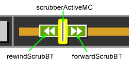

Creating ccPlayer Customized Controls
All of the controls in ccPlayer can be customized, but it is not necessary to include every control that comes with the default controls. For example, if the multiple language feature for captions is not being used, the language button does not need to be included in the customized controls. In fact, there is just one object that is required when customized controls are used, the background movieclip. This is used by ccPlayer to determine the width of the player.
In order for the customized controls to work, they must be given the same instance names as their counterparts in the default. This also maintains the accessibility features built into ccPlayer. In addition, certain objects, such as those used by the scrub bar area, need to reside in the same hierarchy of movie clips that is used by the default controls. To provide a starting point, the authoring files for both the default controls and a sample of customized controls have been included in ccPlayer's download package.
The following information provides the instance name of the object and how it is used. In some cases the object will need to be nested inside another object. Because ccPlayer is expecting to find certain objects nested inside other objects, nesting hierarchy must be maintained.
Background - required when custom controls are used
controlBGMC (movieclip) - This is the only required element. ccPlayer uses this to help define the width of the player. If the media is wider than the controls, this movieclip is increased in width to fit the player from edge to edge. Therefore, it is important not to include graphics which may become distorted when scaled. In addition, the movieclip needs to have an orientation of 0,0 for it to be positioned correctly.
General Buttons - optional
All of the buttons work as typical buttons with up, over, and down states. When building the buttons from scratch, each of the states is optional. Any state that is included, needs to have its frame labeled accordingly: "up", "over", or "down".
playBT (movieclip) - button, used to play the media.
pauseBT (movieclip) - button, used to pause the media.
stopBT (movieclip) - button, used to stop and return to the beginning of the media.
rewindBT (movieclip) - button, used to rewind the media five seconds.
forwardBT (movieclip) - button, used to forward the media five seconds.
cconBT (movieclip) - button, indicates captions are on, used to turn captions off.
ccoffBT (movieclip) - button, indicates captions are off, used to turn captions on.
ccnoneMC (movieclip) - graphic used to indicate there are no captions available for this media.
Special buttons - optional
fullscreenBT (movieclip) - button, used to switch the view to fullscreen mode.
normalscreenBT (movieclip) - button, used to return the view to normal viewing mode.
searBT (movieclip) - button, used to open the search window containing the search captions feature.
langBT (movieclip) - button, used to open the language window containing the caption language selector.
instBT (movieclip) - button, used to open the instructions window, which lists the keyboard shortcuts for the player.
Tool tips for Special Buttons
Each of the special buttons (fullscreenBT, normalscreenBT, searBT, langBT, and instBT) has a tool tip naming its function. The implementation of these tool tips is a little more complex than what is typical. Putting the tool tip in the "over" frame of the button movieclip, does not ensure that the tool tip disappears when a keyboard user activates the button and moves the focus to another area.
In order to be implemented properly, all of the tool tips reside within the button they reference on the layer labeled "tip". This layer is active in all states of the button (up, over, and down). However, there is ActionScript code placed in the frames of each of the states either hiding (fullscreenTipMC.visible=false;) or showing the tool tip (fullscreenTipMC.visible=true;). Additional coding has been placed in ccPlayer's controls class that also hides the tool tips when necessary.
fullscreenTipMC (movieclip) - used to label the fullscreen button.
normalscreenTipMC (movieclip) - used to label the normal screen button.
searchTipMC (movieclip) - used to label the search screen button.
languageTipMC (movieclip) - used to label the language screen button.
instructionsTipMC (movieclip) - used to label the instructions screen button.
Poster button - optional
posterIcon (movieclip) - used to display an icon, such as a play arrow, that would appear on top of all of the poster images.
Volume area - optional
In order to ensure the volume controls are accessible to screen-reader and keyboard users, buttons are provided for raising and lowering the volume. When either of these buttons is pressed, the volume is raised or lowered by 20 percent.
volumeUpBT (movieclip) - button, used to raise the volume by 20 percent.
volumeDownBT (movieclip) - button, used to lower the volume by 20 percent.
The volume controls include a graphic display which shows the current volume level. Since there are six levels (0%, 20%, 40%, 60%, 80% and 100%) available, the volume display movieclip is divided into six frames each of which will display the graphics for that level. The frames must be labeled:
- level0
- level20
- level40
- level60
- level80
- level100
volumeDisplayMC (movieclip) - graphic movieclip, used to display each of the six volume levels.
Time display - optional
A parent movieclip is used to hold the time display content. It has two functions:
- hold the textfields used to display various time codes
- provide an object which is used to provide screen readers users the time and media loading information
timeArea (movieclip) - parent movieclip used to hold the time-related textfields and provide time and media loading information to screen-reader users.*
*Reading the timecode from a textfield does not provide a screen-reader user with the context of the time (could be duration, could be time left). By hiding the textfields and copying their contents into a string which can be read as the accessibility label on the timeArea object, the user has a better understanding of the time reference. In ccPlayer, the information is presented as: "playhead at 5 seconds, time remaining 15 seconds, 85 percent loaded"
There are three time-related textfields which can reside in the timeArea parent movieclip:
currentTimeText (textfield) - used to display the timecode of the current position of the media (format 00:00:00).
timeLeftText (textfield) - used to display the time remaining from the current position of media (format 00:00:00)
totalTimeText (textfield) - used to display the duration of the media (format 00:00:00).
Scrub bar - optional
scrubberMC (movieclip) - parent movieclip used to hold the various scrub bar objects:
- background
- loading progress bar
- scrub bar button
Scrub bar objects:
scrubberBGMC (movieclip) - (required when the scrub bar is used in customized controls) used to not only display the background of the scrub bar area behind the progress bar, but also to determine the proper scaling of the progress bar and positioning of the scrub bar button.
progressBarMC (movieclip) - used to display the percentage of the media that has been loaded. When used with media being streamed from a media server, displays 100 percent loaded.
scrubberBT (movieclip) - used to hold the objects that are used to drag or jump the media to a different play point. IN ORDER FOR SCRUBBING TO WORK THE scrubberActiveBT OBJECT MUST BE INCLUDED INSIDE THIS MOVIECLIP. See below.
scrubberActiveBT (movieclip) - button, used to drag the media to a different play point. MUST BE INCLUDED FOR SCRUBBING TO WORK.
Special scrub bar accessibility feature
The scrubberBT button can house a special object – scrubberActiveMC – inside that allows keyboard and screen-reader users to scrub or jump to various areas in the media. Since the scrubberActiveMC is housed inside the scrubberBT, it is not activated by someone who is using the mouse to drag around the scrub bar.
The first way the scrubberActiveMC is used is to allow keyboard users to use shortcut keys to scrub the media. This is done by tabbing to the scrubberActiveMC object and, when it is highlighted, the user can press the period (.) key to scrub the media forward and the comma key (,) to scrub the media backwards.
The other way the scrubberActiveMC can be used is to house the forward and reverse buttons. In cases, where there is not enough room to include the forward and reverse buttons in the controls, these buttons can be placed inside the scrubberBT button. They are not visible unless the scrubberActiveMC has focus. When it has focus, the buttons appear. Once the user tabs past the forward button on the right the buttons are once again hidden. An example of this can be found in the mp3 demo with customized controls on the ccPlayer Sample page.

To set this up properly, the scrubberActiveMC object, reverse button, and forward button must be housed inside the scrubberBT button. This has been built into the customizesample.fla, which can be used for reference.
scrubberActiveMC (movieclip) - used to trigger the shortcut keys for scrubbing and the forward and reverse button display, if desired.
forwardScrubBT (movieclip) - button, used to forward the media 5 seconds.
rewindScrubBT (movieclip) - button, used to rewind the media 5 seconds.
Last updated: January 30, 2010